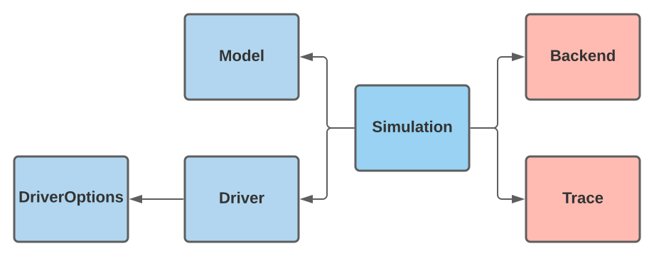

Design
The BlockOpt interface is constructed through a delegation design pattern, leveraging the behavior of existing types by wrapping them in new types. The figure below is a visual representation of the BlockOpt type delegation, where the arrow represents a has-a relationship.

Here, the user interfaces with the blue shaded types. The red shaded types hold Algorithm 7.1's routine and the observations collected throughout the iteration. The iteration takes place in the backend type, which defines the needed memory for routine 7.1. The trace type holds observations made during the simulation.
Entry Point: optimize call.
The entry-point of a simulation occurs when a user makes a function call to optimize(m, d) where m is a loaded model and d is a driver instance.
BlockOpt.optimize — Methodoptimize(model::Model, driver::Driver)An entry-point into the minimization iteration with the given model subject to the specified driver.
BlockOpt.optimize — Methodoptimize(model::Model, driver::Driver)Attempts to determine the unconstrained minimum of f via a first-order method with the initial iterate given by x₀. The gradient ∇f! must be specified as an inplace operation.
Exit Point: optimize return.
Upon an optimize call a Simulation instance s is created and passed to the fallback method optimize!(s). The exit-point occurs when optimize! returns simulation s at a terminal state.